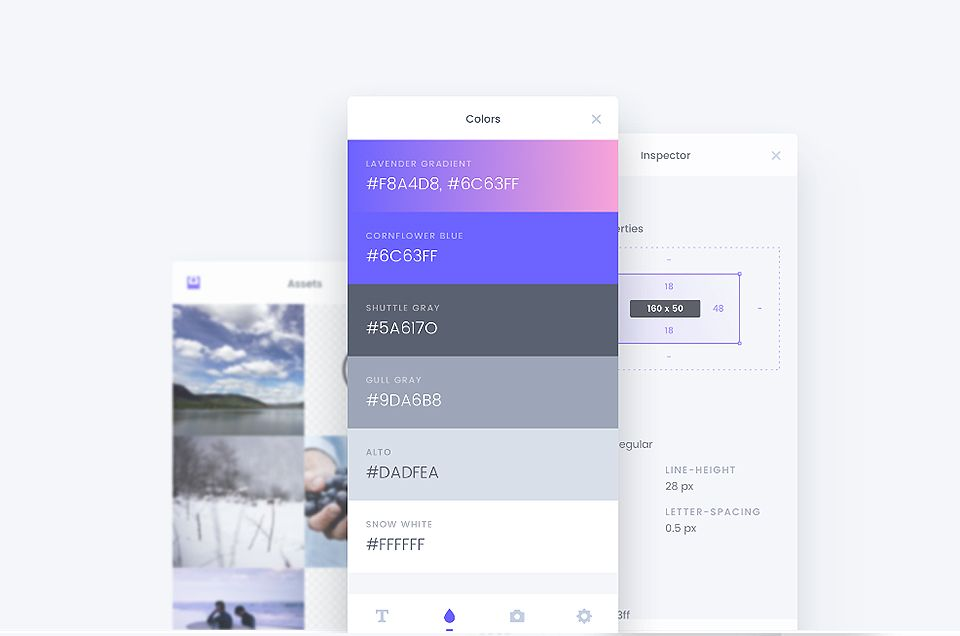

CSSPeeper
это полезное расширение для фронтенд-разработчиков, которое позволяет быстро, удобно и наглядно предоставить информацию о различные стилях страницы, а также даёт возможность загрузить применяемые на сайте ассеты.
Помимо цветов, CSS Peeper позволяет просматривать иллюстрации, текстовые документы, файлы вёрстки и видеофайлы. Иными словами, он многофункционален и удобен в работе.
CSS Peeper выводит на экран не только название шрифта и коды цветов, но и размер объектов и CSS-файла, а также их время загрузки. В отдельной вкладке можно скачать весь графический контент с сайта.
Чтобы воспользоваться расширением, выполните следующие шаги:
step 1: Зайдите в CSS Peeper в интернет-магазине Chrome или в надстройках Firefox и нажмите «Добавить в Chrome».
step 2: Нажмите «Добавить расширение».
step 3: Вуаля, ваш CSS Peeper установлен. После успешной установки вы увидите в правом верхнем углу расширение, которое будет добавлено в ваш браузер.
step end: The end
Просто оф сайт -> Тык
Применение
Извлекайте CSS и создавайте красивые руководства по стилю.
🔎 Больше не нужно копаться в коде. Проверяйте стили простым, хорошо организованным и красивым способом. Получите его прямо сейчас!
CSS Peeper - это программа для просмотра CSS, созданная специально для дизайнеров. Получите доступ к полезным стилям с помощью нашего расширения для Chrome. Наша миссия - позволить дизайнерам сосредоточиться на дизайне и тратить как можно меньше времени на копание в коде.
Вы когда-нибудь задумывались о том, какая высота линии, шрифт или размер кнопки на сайте? Мы предоставляем вам идеальный инструмент для удовлетворения вашего любопытства. Мы даем вам возможность проверять код самым простым способом. Проверяйте скрытые CSS-стили объектов и цветов в Интернете.
P.s мне было лень придумывать какой нибудь текст поэтому я просто перевел и вставил описание в магазине расширений хрома🤫
Заключение
В заключение, CSS peeper — очень полезное расширение для веб-дизайнеров, которые хотят украдкой взглянуть на какую-нибудь веб-страницу и узнать ее CSS. Но следует быть очень осторожным, используя это расширение, поскольку оно часто требует возможности читать и даже изменять все на посещаемых веб-страницах, что в некоторых случаях может привести к утечкам данных, перехвату паролей, отслеживанию просмотра и т. д.
P.S Сорри что так мало, просто хз че писать про peeper можете посмотреть обзор снизу
Таблица достоинств и недостатков
| + | - |
|---|---|
| Полностью бесплатно | Требует постоянных обновлений; |
| Доступно в РФ | Для различных браузеров требуется своя адаптированная версия программы. |
| Легкодоступно | Зачастую они требуют возможности читать и даже изменять все на посещаемых веб-страницах, что в некоторых случаях может привести к утечкам данных, перехвату паролей, отслеживанию просмотров и т. д. |
| Адаптация и кроссплатформенность для любого браузера. |